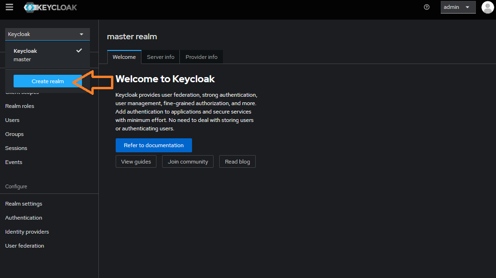

Leveraging Istio to compose an OPEA Pipeline with authentication and authorization enabled¶
In enterprise settings not only do we want to identify who is using a service but also what they are entitled to use. This is where authentication and authorization comes in. In contrast, API tokens provide full access by virtue of possession as long as they are valid/not expired. With that aside, we first provide the solution on AuthN and AuthZ in OPEA using Istio and JWT tokens. Another option is to leverage the oauth2-proxy with various OIDC providers for authentication and authorization. Using oauth2-proxy with Istio ensures secure, scalable access control, centralizes user management, and provides seamless single sign-on capabilities, improving overall security and user experience in complex microservices environments.
Currently we provide three kinds of setups for authentication and authorization. Note: Please complete the steps in the prerequisite before proceeding with these tasks. :
Here we use the chatQnA pipeline as an example.
Prerequisite¶
Before composing an OPEA pipeline with authN & authZ, user need to install Istio to support this feature. Please follow the steps here for Istio installation.
Deploy chatQnA pipeline and enable Istio sidecar injection
# deploy ChatQnA pipeline. You can either leverage GMC or the ChatQnA helm chart.
kubectl create ns chatqa
# here's the command to leverage GMC custom resource for ChatQnA deployment.
kubectl apply -f $(pwd)/../../microservices-connector/config/samples/ChatQnA/chatQnA_dataprep_xeon.yaml
# please refer the doc https://github.com/opea-project/GenAIInfra/tree/main/helm-charts/chatqna for deployment with helm chart.
# and install under `chatqa` namespace
# expose an environment variable to set the deployment method
# which will affect the configuration we use for authentication and authorization
export DEPLOY_METHOD=<your deploy method, valid values: "gmc-based" and "helm-chart-based">
# patch the deployment to enable istio sidecar injection
# for GMC based deployment, set the `deployment-name` to `router-service-deployment`
# for helm chart based deployment, set the `deployment-name` to `chatqna`
kubectl patch deployment -n chatqa <deployment-name> --patch '{
"spec": {
"template": {
"metadata": {
"labels": {
"sidecar.istio.io/inject": "true"
}
}
}
}
}'
The istio ingress gateway will be used to access the chatQnA service in different setups. Follow the istio guide here to determine the ingress IP and ports and expose them as environment variables.
Perform authentication and authorization via Bearer JWT tokens and curl¶
Authentication and authorization are essential for securing microservices architectures. Using Bearer JWT tokens for these processes ensures that only authenticated users with valid tokens can access specific services, protecting sensitive data. Authentication verifies user identity, while authorization controls their permissions. This layered approach not only prevents unauthorized access but also provides detailed control over service interactions, maintaining system security and compliance. Here we leverage Istio mechanisms together with Bearer JWT tokens to fulfill that.

Perform authentication and authorization via oauth2-proxy and OIDC provider and UI¶
Another choice we have is using oauth2-proxy and OIDC providers. These two streamline authentication and authorization by handling user identity and access management. oauth2-proxy acts as a gateway, integrating with OIDC providers to authenticate users and issue tokens. This setup ensures secure access to applications by validating user credentials and managing permissions, simplifying the implementation of robust security protocols across services.

We are using a similar scenario here that only privileged users can access our chatQnA service and ask questions. In this case, user mary who has the role user can access the chatQnA pipeline. And user bob with the role viewer will not be able to access the service. Of course, the other users without valid token cannot access the service.
Installation and configuration of oauth2-proxy and OIDC Provider
Here we take Keycloak as the sample OIDC Provider to use in the example. Follow the steps to install and configure Keycloak.
# make sure running under authN-authZ/auth-istio folder
kubectl apply -f $(pwd)/keycloak_install.yaml
# get the ip and port to access keycloak.
export HOST_IP=$(kubectl config view --minify -o jsonpath='{.clusters[0].cluster.server}' | cut -d '/' -f3 | cut -d ':' -f1)
export KEYCLOAK_PORT=$(kubectl get svc keycloak -o jsonpath='{.spec.ports[0].nodePort}')
export KEYCLOAK_ADDR=${HOST_IP}:${KEYCLOAK_PORT}
# set the url to access the backend services
if [ "${DEPLOY_METHOD}" = "gmc-based" ]; then
export URL="http://chatqna-ui.com:${INGRESS_PORT}"
else
export URL="http://chatqna-service.com:${INGRESS_PORT}"
fi
Note: Double check if the host ip captured is the correct ip.
Access the Keycloak admin console through the KEYCLOAK_ADDR to configure the users as well as roles. Use the username and password specified in the yaml file to login.
The user management is done via Keycloak and the configuration steps look like this:
Create a new realm named
chatqnawithin Keycloak.
Create a new client called
chatqnaand setClient authenticationto ‘On’. Set the value of$URLwith “/* “ (e.g. “http://chatqna-ui.com:${INGRESS_PORT}/*”) in theValid redirect URIspart. Note thatINGRESS_PORTandINGRESS_HOSTshall be exported following the guide here. Under the Credentials tab you will now be able to locate<your client's secret>, which will be used in the oauth2-proxy configs.


Access the dedicated mappers pane by clicking
<your client's id>-dedicated, located under Assigned client scope to configure a newAudiencemapper with nameaud-mapper-<your client's id>. And include Audience in your client withID tokenandaccess tokenset toOn.
Create new roles
userandviewerby navigating to<your client's id> -> Roles.Create a new user name as
maryand another user asbobwithEmail verifiedset toOn. Set passwords for both users (set ‘Temporary’ to ‘Off’).
Create a new Client Scope with the name
groupsin Keycloak withInclude in Token Scopeset asOn. Include a mapper of typeGroup Membershipand set theToken Claim Nametogroups. If the “Full group path” option is selected, you need to include a “/” separator in the group names defined in the –allowed-group option of OAuth2 Proxy. Example: “/groupname”. After creating the Client Scope namedgroupsyou will need to attach it to your client. Go to Clients and find<your client's id> -> Client scopesand add client scope and selectgroupsand chooseOptionaland you should now have a client that maps group memberships into the JWT tokens so that Oauth2 Proxy may evaluate them.

Create two groups
userandviewerby navigating to Groups -> Create group. Assign roleuserto groupuserand roleviewerto groupviewerand add usermaryas a member of groupuserandbobas a member of groupviewer.
Next, we will install the oauth2-proxy and configure the OIDC information.
# set values for realm name, client name and ingress port
# then deploy oauth2-proxy
export REALM=<YOUR_REALM_NAME>
export CLIENT=<YOUR_CLIENT_NAME>
export CLIENT_SECRET=<YOUR_CLIENT_SECRET>
# generate cookie secret
# Using bash here. More methods found here:
# https://oauth2-proxy.github.io/oauth2-proxy/configuration/overview#generating-a-cookie-secret
export COOKIE_SECRET=$(dd if=/dev/urandom bs=32 count=1 2>/dev/null | base64 | tr -d -- '\n' | tr -- '+/' '-_' ; echo)
kubectl create ns oauth2-proxy
envsubst < $(pwd)/oauth2_install.yaml | kubectl apply -f -
Expose the pipeline endpoint and UI through Istio Ingressgateway
Here we expose the chatQnA endpoint through the ingress gateway and then install the chatQnA conversation UI. Notice that the instructions differs between helm chart based deployment and GMC based deployment. Please the instructions accordingly.
With GMC based deployment, export chatqna endpoint and install UI services:
# expose chatqna endpoint
kubectl apply -f $(pwd)/$DEPLOY_METHOD/chatQnA_router_gateway_oauth.yaml
# install chatqna conversation UI
cd ../../
helm install chatqna-ui $(pwd)/helm-charts/common/ui --set BACKEND_SERVICE_ENDPOINT="http://chatqna-service.com:${INGRESS_PORT}/",DATAPREP_SERVICE_ENDPOINT="http://chatqna-service.com:${INGRESS_PORT}/dataprep"
# expose ui service outside
cd authN-authZ/auth-istio
kubectl apply -f $(pwd)/$DEPLOY_METHOD/chatQnA_ui_gateway.yaml
With helm chart based deployment, the UI already deployed as part of the pipeline. So expose endpoints like this:
kubectl apply -f $(pwd)/$DEPLOY_METHOD/chatQnA_router_gateway_oauth.yaml
Add authentication and authorization rules to the pipeline through Istio Ingress Gateway
Here we apply the authentication and authorization rules.
# Before applying the authorization rule, need to add the oauth2-proxy as the external authorization provider
kubectl apply -f $(pwd)/chatQnA_istio_external_auth.yaml
kubectl rollout restart deployment/istiod -n istio-system
# 'envsubst' is used to substitute envs in yaml.
# use 'sudo apt-get install gettext-base' to install envsubst if it does not exist on your machine
# apply the authentication and authorization rule
# these files will restrict user access with valid token (with valid group and role)
envsubst < $(pwd)/chatQnA_authN_oauth.yaml | kubectl apply -f -
envsubst < $(pwd)/$DEPLOY_METHOD/chatQnA_authZ_oauth.yaml | kubectl apply -f -
Validate authentication and authorization with UI service
Add both host names for ChatQnA UI and backend service into /etc/hosts
sudo sed -i '1i\127.0.0.1 chatqna-service.com' /etc/hosts
sudo sed -i '1i\127.0.0.1 chatqna-ui.com' /etc/hosts
Open browser with address "chatqna-ui.com:${INGRESS_PORT}" if using GMC based deployment. Otherwise, open the browser with address "chatqna-service.com:${INGRESS_PORT}".
Login with user bob and its credentials shall return a 403 error. Login with user mary and its credentials shall able to access the ChatQnA service.